01 / Projects
Selected projects.
Study-Site
A study website built by a student for other students. I worked with Claude and Codex to build and review the site and share lessons.
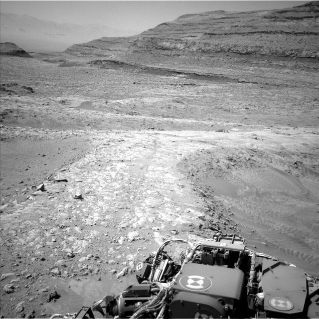
NASA-Space-Apps-26
Sol Stroll is a survival guide for astronauts exploring Mars. It focuses on navigating the planet’s dusty terrain and harsh conditions.
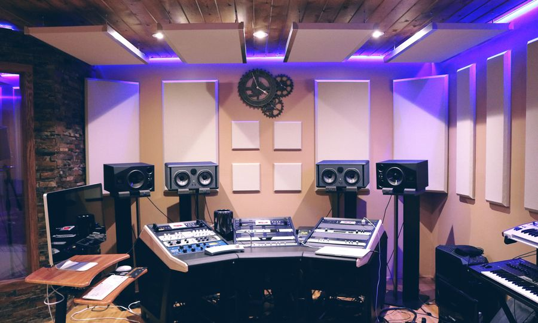
Horrible-Alexa
A homemade desktop assistant that adjusts screen brightness and volume, queues music, and chats with the user.
02 / About
Behind the work.
I’m Jing Heng, a Year 1 Applied AI & Analytics student at Nanyang Polytechnic (NYP), working towards a future as an AI Engineer or Machine Learning Researcher.
I’m building a foundation that connects software development, data analysis, and design. My interests span creating web applications, exploring data with Python, and presenting findings through clear visualizations. I want to understand both how intelligent systems work and how to turn that understanding into useful applications.
Personal projects, including a study website and this portfolio, give me space to put ideas into practice and refine them. I care about how an application feels to use, from its layout and accessibility to the clarity of its content.
As I progress through my studies, my focus is on strengthening my technical fundamentals and developing the skills to build, evaluate, and improve AI systems. I also explore AI-assisted development tools as part of my workflow.
03 / Technical Skills
The toolkit.
Languages and tools I use across development, analysis, and design.
Web development
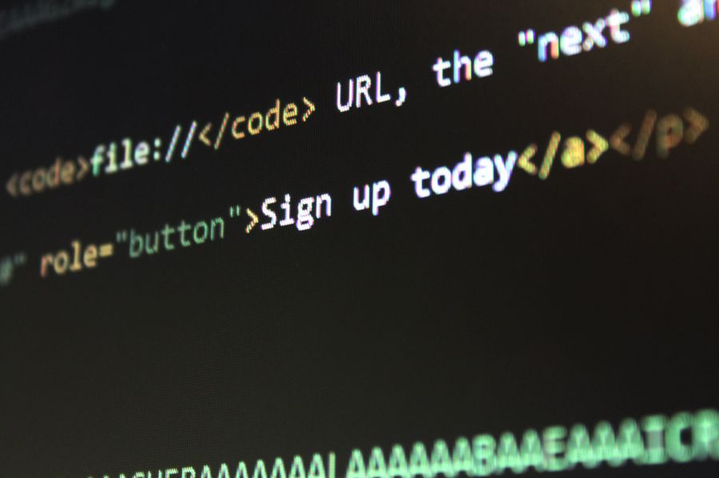
- HTML
- CSS
- JavaScript
Building responsive web interfaces with structure, styling, and interactive behavior.
Python
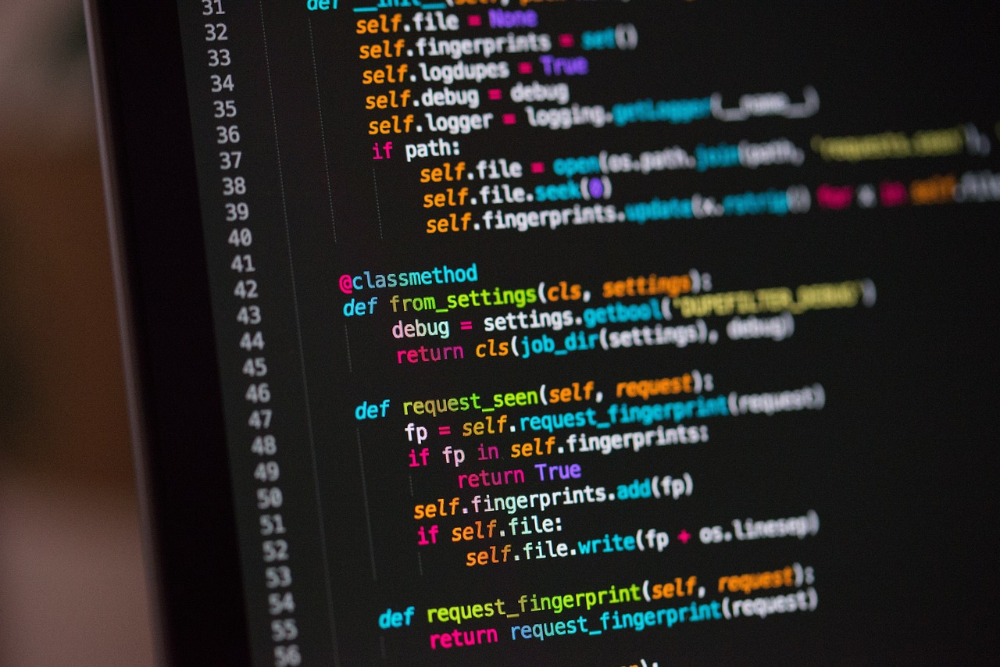
- Python
- Flask
- NumPy
- Matplotlib
- socket
Programming for web backends, numerical computing, plotting data, and network communication.
Networking & analysis
- Wireshark
- Cisco Packet Tracer
Inspecting network traffic and simulating networks to understand connections and investigate communication problems.
Data visualization
- Tableau
- Power BI
Turning data into charts and dashboards that make patterns, comparisons, and findings easier to understand.
Version control
- Git
- GitHub
Tracking code changes, managing branches, and keeping project history organized for individual and collaborative work.
Wireframing & design
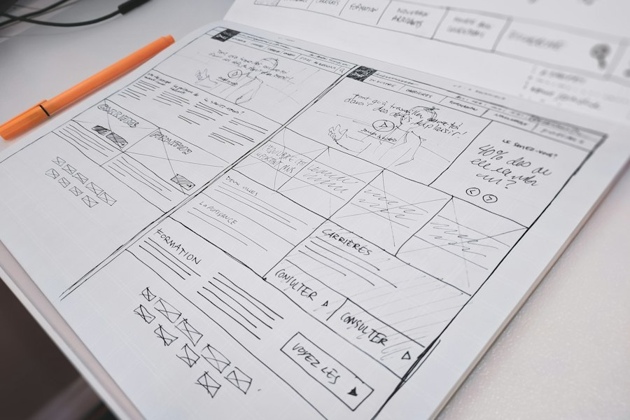
- Figma
- Adobe Express
Planning page layouts and creating visual concepts to explore how an interface should look and work.
AI-assisted development
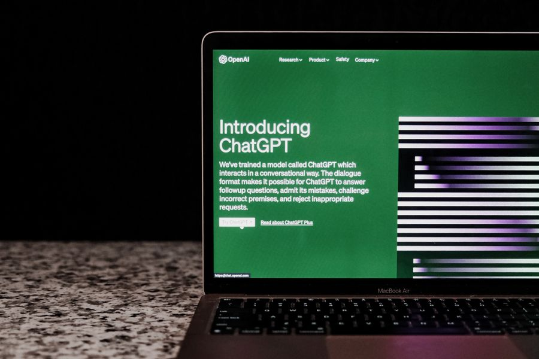
- Claude Code
- Codex
- Kiro
- Dependabot
Using AI coding tools to explore ideas and support implementation and debugging, alongside Dependabot for automated dependency updates. Review and testing remain part of the process.
04 / Education
My learning journey.
From secondary school to applied AI, with more to learn ahead.
-
Completed2022 – 2025Secondary education
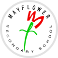
Mayflower Secondary School
My secondary school education, before continuing my studies at Nanyang Polytechnic.
- Leadership Merit AwardAt graduation
- EAGLES Award2025
- Most Improved Award2025
-
Currently studying2026 – 2029 (expected)Year 1
Nanyang Polytechnic
Applied AI & Analytics
Building my foundation in artificial intelligence and data analytics as I work towards becoming an AI Engineer or Machine Learning Researcher.
-
AspirationLooking ahead
National University of Singapore
AI-related studies
I aim to pursue an AI-related course at NUS, deepening my understanding of artificial intelligence and exploring opportunities in machine learning research.
Future goal
05 / Certificates
Selected certificates.
CompTIA Security+
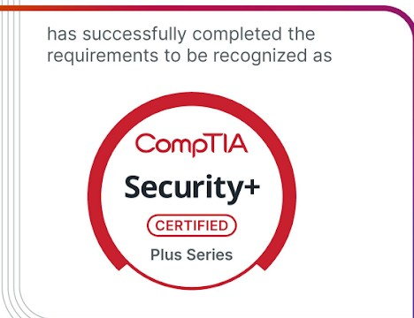
NASA Space Apps Challenge 2026
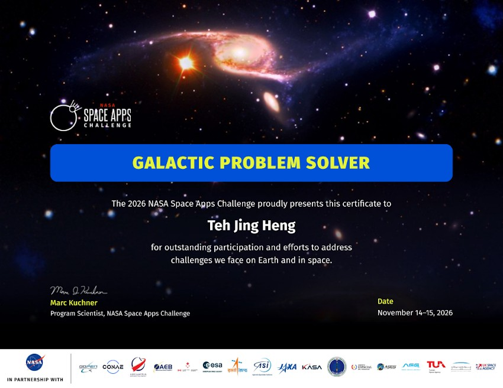
Google.org AI Ready
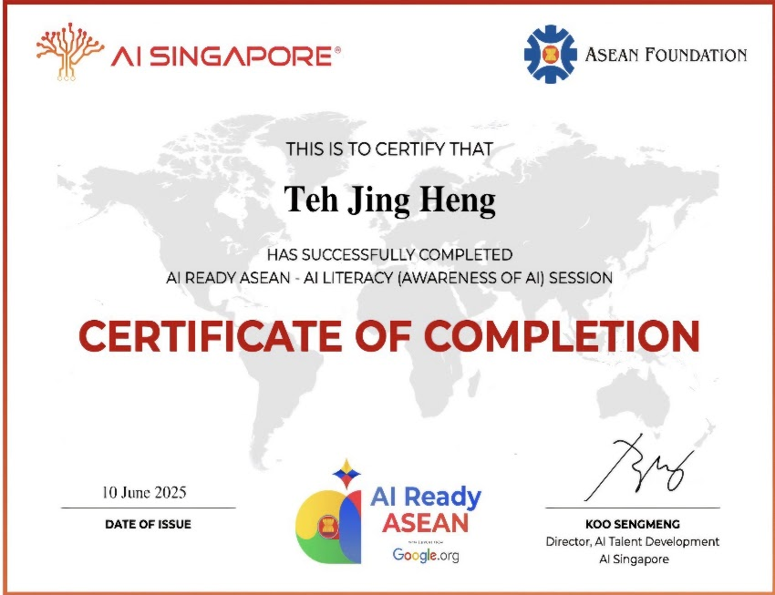
BuildingBloCS 2025 June Conference Runner-Up
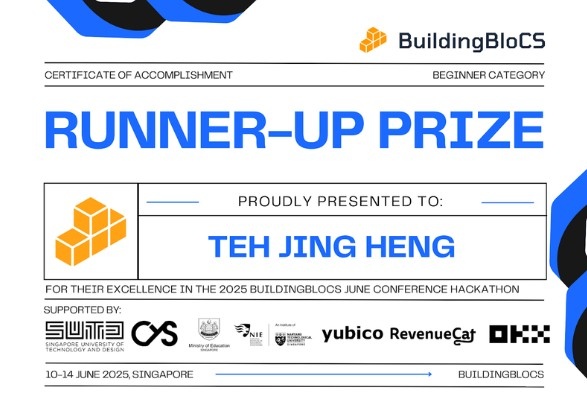
PCEP (Certified Entry-Level Python Programmer)
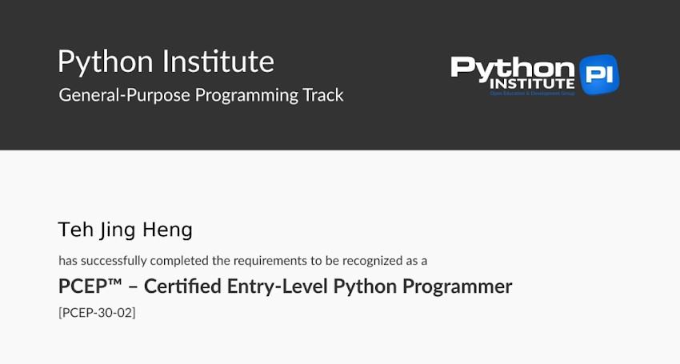
SIM LSE Data Analytics
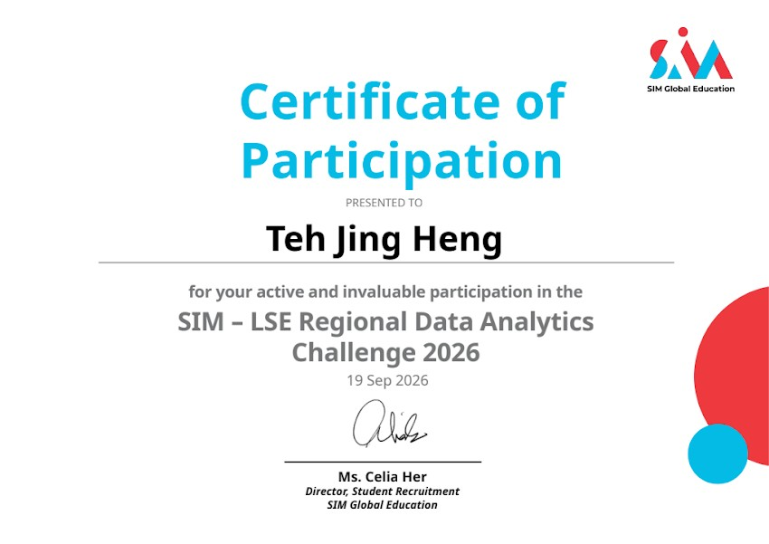
06 / Hackathons
Competition results.
NASA Space Apps Challenge 2026
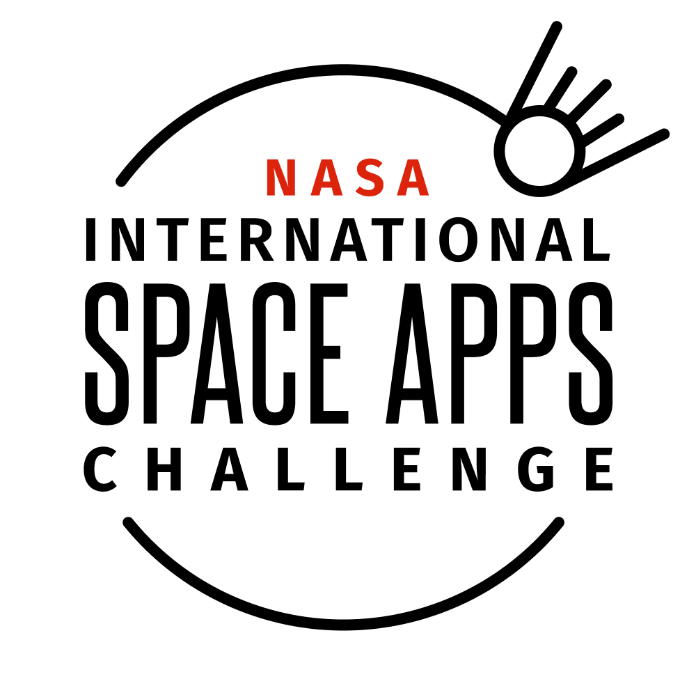
Sol Stroll is a guide to navigating the dusty terrain of Mars.
Sentinel Cyber Sports Day 2026
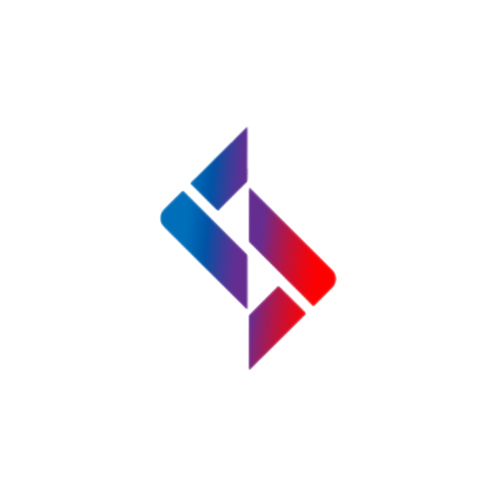
Students competed in cybersecurity challenges that tested their digital defence skills.
SIM LSE Data Hackathon 2026
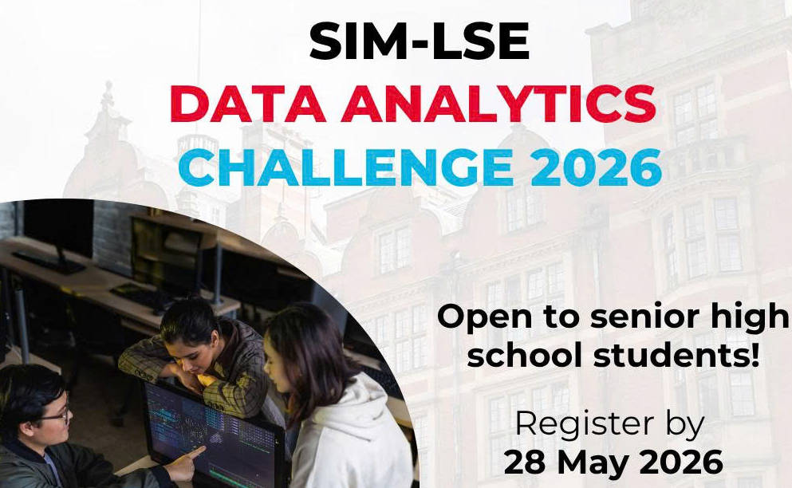
I took part in the regional data analytics challenge, working with data analysis and visualisation.
SLEUTH MODE
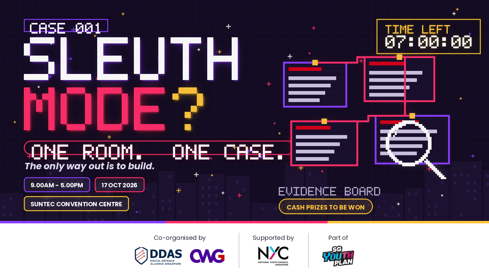
Teams used AI agents to investigate a fictional financial fraud case.
BuildingBloCS 2025 June Conference Hackathon
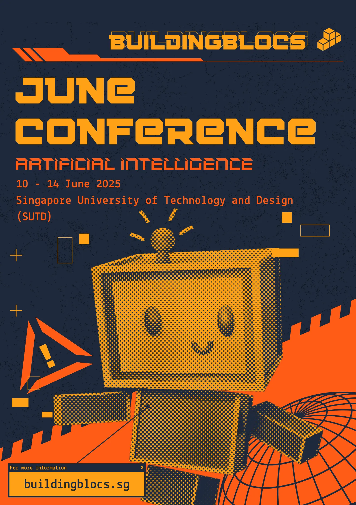
The June conference brought students together for an AI hackathon. View my award certificate.
07 / Contact